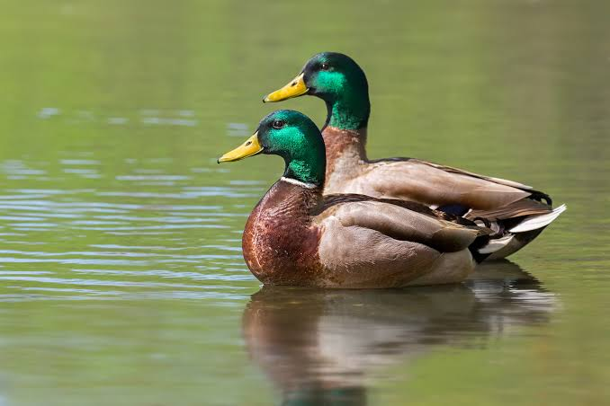

Ducks
Birds
Duck is the common name for numerous species in the waterfowl family Anatidae which also includes swans and geese. Ducks are divided among several subfamilies in the family Anatidae; they do not represent a monophyletic group but a form taxon, since swans and geese are not considered ducks.
Lifespan: Mallard: 5 – 10 years
Clutch size: Mallard: 8 – 13
Phylum: Chordata
Wingspan: Mallard: 81 – 98 cm
Mass: Mallard: 0.72 – 1.6 kg, Canvasback: 1.2 kg, MORE Encyclopedia of Life
Length: Mallard: 50 – 65 cm, Canvasback: 48 – 56 cm
Duck, any of various species of relatively small, short-necked, large-billed waterfowl. In true ducks—i.e., those classified in the subfamily Anatinae in the waterfowl family Anatidae—the legs are placed rearward, as in swans, rather than forward, as in geese.
The result is a distinctive waddling gait. Most true ducks, including a few inaccurately called geese (e.g., sheldgeese) by reason of size and build, also differ from swans and true geese in the following characteristics: males (drakes) and females (hens or ducks)
exhibit some degree of differentiation in plumage and in call, males molt twice annually, females lay large clutches of smooth-shelled rather than rough-shelled eggs, and both sexes have overlapping scales on the skin of the leg.
The wild mallard (Anas platyrhynchos) is believed to be the ancestor of all domestic ducks, and it has undergone numerous crossbreedings and mutations since it was first domesticated in China between 2,000 and 3,000 years ago.
All true ducks, except those in the shelduck group (the tribe Tadornini) and sea ducks (the tribes Mergini and Somateriini), mature in the first year and pair only for the season—unlike the late-maturing, life-mating true geese and swans.
Ducks are generally divided into three major groups, dabbling (shallow-water), diving, and perching ducks, based on their characteristic behaviours. The mallard, a typical dabbling duck (any of about 38 species of Anas and about 5 species in other genera), is one of the most popular game birds.
Biology of Ducks
Etymology
The word duck comes from Old English *dūce "diver", a derivative of the verb *dūcan "to duck, bend down low as if to get under something, or dive", because of the way many species in the dabbling duck group feed by upending; compare with Dutch duiken and German tauchen "to dive".
This word replaced Old English ened/ænid "duck", possibly to avoid confusion with other Old English words, like ende "end" with similar forms. Other Germanic languages still have similar words for "duck", for example, Dutch eend "duck", German Ente "duck"
and Norwegian and "duck". The word ened/ænid was inherited from Proto-Indo-European; compare: Latin anas "duck", Lithuanian ántis "duck", Ancient Greek nēssa/nētta (νῆσσα, νῆττα) "duck", and Sanskrit ātí "water bird", among others.
Morphology
The overall body plan of ducks is elongated and broad, and the ducks are also relatively long-necked, albeit not as long-necked as the geese and swans.
The body shape of diving ducks varies somewhat from this in being more rounded. The bill is usually broad and contains serrated pecten (biology), which are particularly well defined in the filter-feeding species.
In the case of some fishing species the bill is long and strongly serrated. The scaled legs are strong and well developed, and generally set far back on the body, more so in the highly aquatic species.
The wings are very strong and are generally short and pointed, and the flight of ducks requires fast continuous strokes, requiring in turn strong wing muscles. Three species of steamer duck are almost flightless, however.
Many species of duck are temporarily flightless while moulting; they seek out protected habitat with good food supplies during this period. This moult typically precedes migration.
The drakes of northern species often have extravagant plumage, but that is moulted in summer to give a more female-like appearance, the "eclipse" plumage.
Southern resident species typically show less sexual dimorphism, although there are exceptions such as the paradise shelduck of New Zealand, which is both strikingly sexually dimorphic and in which the female's plumage is brighter than that of the male.
The plumage of juvenile birds generally resembles that of the female. Over the course of evolution, female ducks have evolved to have a corkscrew shaped vagina to prevent rape.
Feeding
Ducks eat a variety of food sources such as grasses, aquatic plants, fish, insects, small amphibians, worms, and small molluscs.
Dabbling ducks feed on the surface of water or on land, or as deep as they can reach by up-ending without completely submerging. Along the edge of the beak, there is a comb-like structure called a pecten. This strains the water squirting from the side of the beak and traps any food. The pecten is also used to preen feathers and to hold slippery food items.
Diving ducks and sea ducks forage deep underwater. To be able to submerge more easily, the diving ducks are heavier than dabbling ducks, and therefore have more difficulty taking off to fly.
A few specialized species such as the mergansers are adapted to catch and swallow large fish.
The others have the characteristic wide flat beak adapted to dredging-type jobs such as pulling up waterweed, pulling worms and small molluscs out of mud, searching for insect larvae, and bulk jobs such as dredging out, holding, turning head first,
and swallowing a squirming frog. To avoid injury when digging into sediment it has no cere, but the nostrils come out through hard horn.
Breeding
Ducks generally only have one partner at a time, although the partnership usually only lasts one year. Larger species and the more sedentary species (like fast-river specialists) tend to have pair-bonds that last numerous years.
Most duck species breed once a year, choosing to do so in favourable conditions (spring/summer or wet seasons). Ducks also tend to make a nest before breeding, and, after hatching, lead their ducklings to water.
Mother ducks are very caring and protective of their young, but may abandon some of their ducklings if they are physically stuck in an area they cannot get out of (such as nesting in an enclosed courtyard) or are not prospering due to genetic defects or
sickness brought about by hypothermia, starvation, or disease. Ducklings can also be orphaned by inconsistent late hatching where a few eggs hatch after the mother has abandoned the nest and led her ducklings to water. Most domestic ducks neglect their eggs and ducklings, and their eggs must be hatched under a broody hen or artificially.
Distribution and habitat
The ducks have a cosmopolitan distribution. A number of species manage to live on sub-Antarctic islands like South Georgia and the Auckland Islands.
Numerous ducks have managed to establish themselves on oceanic islands such as Hawaii, New Zealand and Kerguelen, although many of these species and populations are threatened or have become extinct.
Some duck species, mainly those breeding in the temperate and Arctic Northern Hemisphere, are migratory; those in the tropics, however, are generally not.
Some ducks, particularly in Australia where rainfall is patchy and erratic, are nomadic, seeking out the temporary lakes and pools that form after localised heavy rain.